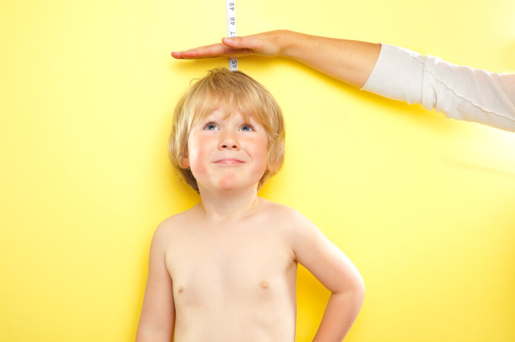
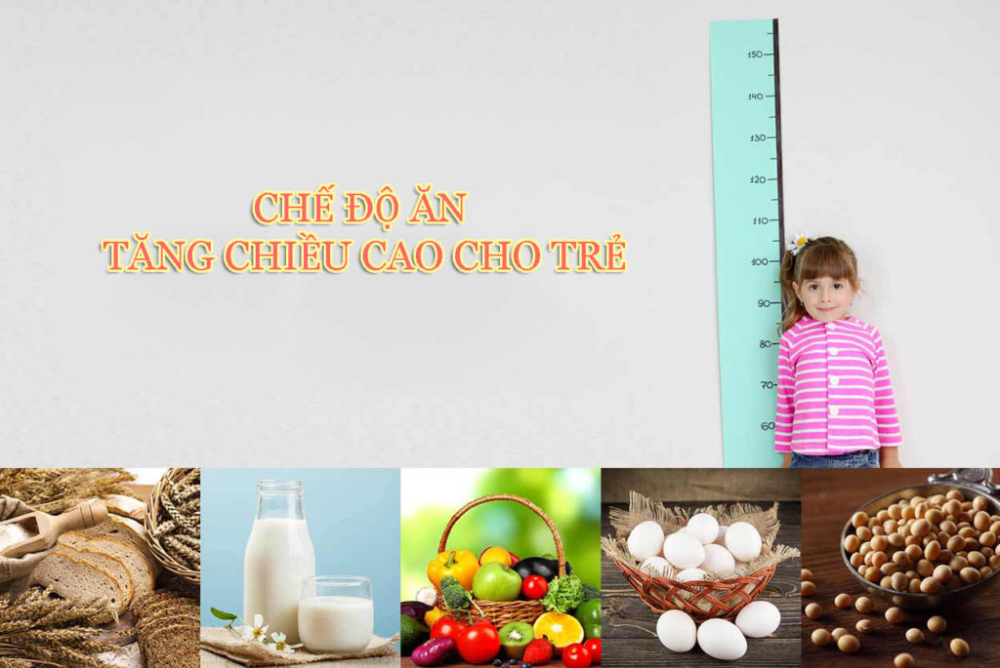
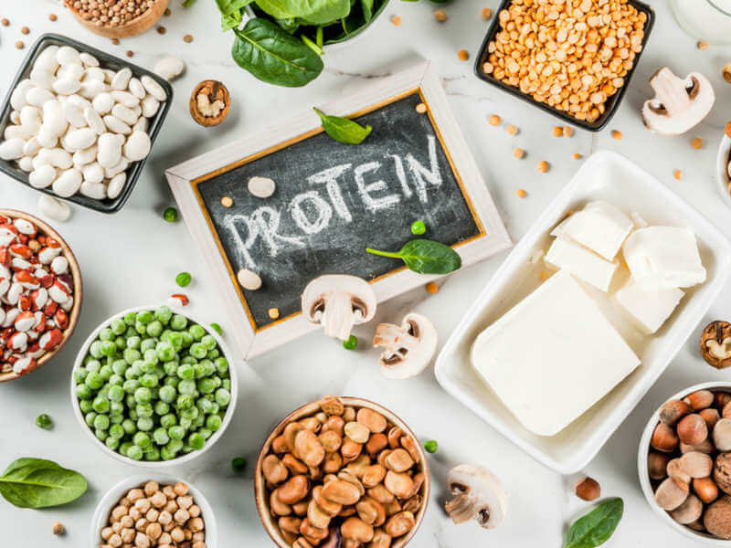
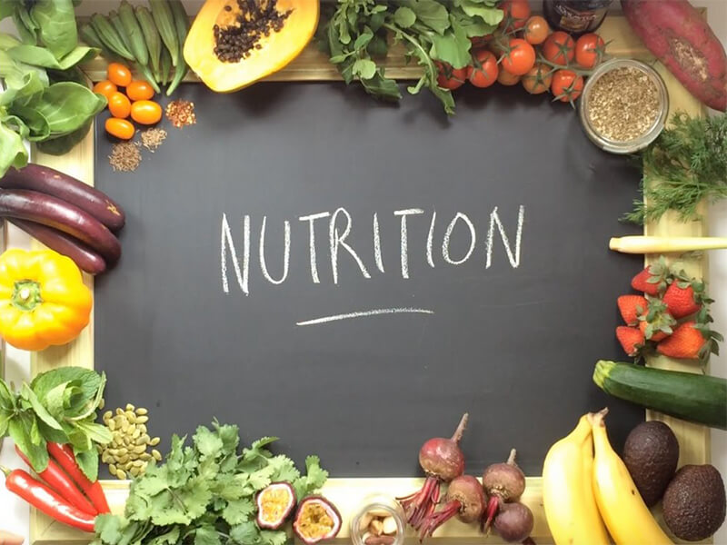
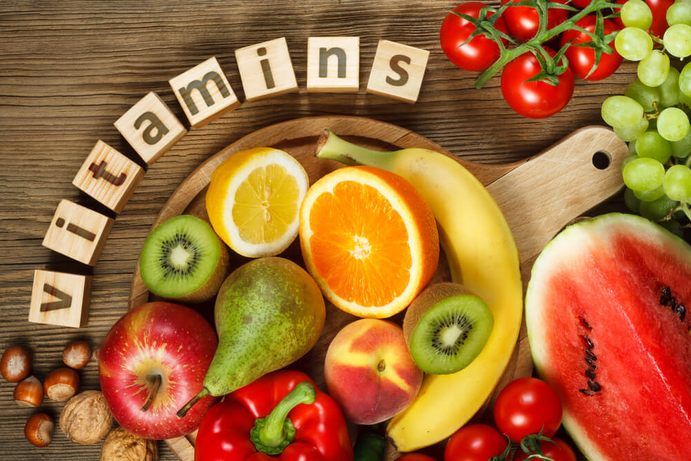

Các chuyên gia dinh dưỡng chia sẻ chế độ ăn tăng chiều cao cho trẻ

Giúp trẻ đạt được chiều cao tối ưu thường là mối quan tâm lớn của các bậc cha mẹ. Thực hiện một lối sống lành mạnh, thường xuyên kết hợp với chế độ ăn tăng chiều cao cho trẻ sẽ giúp giải quyết vấn đề này.
Cách chơi bóng rổ tăng chiều cao
Cách kích thích tuyến yên để tăng chiều cao
Ba yếu tố quan trọng nhất để quyết định chiều cao là gen, chế độ ăn uống và lối sống. Mặc dù bạn không thể thay đổi được cấu trúc di truyền mà bạn đã truyền cho con bạn, nhưng bạn có thể thay đổi được chế độ ăn uống và lối sống hàng ngày của chúng. Đó chính là lý do vì sao mà bạn nên đọc bài viết này.
1. Mối quan hệ giữa thực phẩm và chiều cao của trẻ em

Ngoài gen thì chiều cao của trẻ còn liên quan đến chế độ ăn uống và luyện tập thể thao hàng ngày
Nếu bạn và đối tác của bạn cao thì khả năng con bạn cao là rất cao, và ngược lại. Nhưng điều mà cha mẹ không hề hay biết là chiều cao của trẻ phụ thuộc vào bạn. Mặc dù mọi sự cố gắng không thể tạo ra được sự khác biệt lớn nhưng chắc chắn sẽ giúp các bé tăng thêm được hàng chục centimet.
Một đứa trẻ bắt đầu phát triển gần như ngay sau khi sinh. Điều quan trọng cần biết là phụ nữ đạt được chiều cao tối đa ở khoảng 19 tuổi và đàn ông là 25 tuổi. Trong cơ thể chúng ta, chủ yếu tuyến yên đóng vai trò lớn nhất trong việc xác định chiều cao mà tuyến yên lại tiết ra hormone tăng trưởng chịu trách nhiệm cho việc tăng chiều cao. Vì thế, để tăng chiều cao thì bạn cần phải biết cách kích thích chức năng của hormone tăng trưởng này hoạt động hiệu quả. Đó là gì? Đó chính là thực phẩm hỗ trợ tăng chiều cao cho trẻ.
Khi nói tới mối quan hệ giữa thực phẩm và sự tăng trưởng của trẻ thì bạn nên tìm hiểu xem những chất dinh dưỡng nào nên được bổ sung và tránh những loại thực phẩm nào. Tham khảo danh sách những loại thực phẩm giúp tăng chiều cao cho trẻ ở phần dưới đây:
2. Các chất dinh dưỡng trong thực đơn tăng chiều cao cho trẻ
a.Protein

Protein rất quan trọng để cơ thể bé phát triển
Một chế độ ăn tăng chiều cao cho trẻ sẽ không thể thiếu chất dinh dưỡng đa lượng – Protein. Đây là một trong những thành phần trọng nhất trong chế độ ăn uống khi nói đến việc tăng chiều cao ở trẻ. Protein rất cần thiết cho việc xây dựng, phát triển và duy trì mô và các cơ bắp trong cơ thể. Tình trạng thiếu protein có thể sẽ khiến các bé gặp các tình trạng như còi xương, thấp hoặc nặng hơn là bị suy dinh dưỡng. Do đó, để đảm bảo sức khỏe cũng như thúc đẩy tăng trưởng chiều cao cho các bé thì chúng tôi khuyên bạn nên cân đối chế độ ăn cân bằng với đầy đủ protein.
Các thực phẩm giúp tăng chiều cao cho trẻ giàu protein bao gồm: trứng, thịt, súp lơ xanh, các loại hạt, chuối,…
b.Khoáng chất

Các khoáng chất giúp bảo vệ xương, giúp xương chắc khỏe
Một số khoáng chất trong thực phẩm rất cần thiết cho việc hỗ trợ sự tăng trưởng của trẻ về chiều cao. Các khoáng chất cần bổ sung trong thực đơn tăng chiều cao cho bé bao gồm: sắt, magiê, phốt pho, iốt, mangan và florua được biết đến để tăng cường sự phát triển của trẻ em và thanh thiếu niên. Canxi cũng rất quan trọng vì nó không chỉ hỗ trợ các bé tăng trưởng mà còn giúp xương chắc khỏe.
Những thực phẩm giàu khoáng chất bao gồm: cà rốt, trứng, cá, sữa, gan bò,…
c.Vitamin

Hoa quả là nguồn vitamin dồi dào nhất
Khi nói đến sức khỏe và chiều cao của xương, Vitamin D đóng vai trò quan trọng. Điều này là do nó giúp hấp thụ canxi trong cơ thể. Sự thiếu hụt vitamin D có thể dẫn tới tình trạng yếu xương, tăng tưởng chậm mà còn có tác động tiêu cực tới chiều cao. Ngoài ra, các vitamin khác như Vitamin A, B1, B2, C, riboflavin, axit ascorbic và Vitamin F cũng cực kỳ cần thiết trong chế độ ăn uống cân bằng, lành mạnh.
Những loại rau củ và rau củ giàu vitamin, rất tốt cho các bé bao gồm: Cam, bưởi, bông cải xanh, rau mầm, kiwi,..
3. Điểm danh các thực phẩm giúp tăng chiều cao cho trẻ
a.Các sản phẩm từ sữa
Các sản phẩm từ sữa như sữa tươi, sữa đặc, phô mai, sữa chua,.. đều chứa các khoáng chất thiết yếu như canxi, vitamin như A,B,D và E. Sữa cũng là một nguồn protein tốt giúp tăng trưởng tế bảo trong cơ thể. Sữa cũng là một lựa chọn tuyệt vời
cho các bữa sáng của các bé.
Trứng Trứng là thực phẩm thiết yếu trong mỗi bữa ăn gia đình ở Việt Nam không chỉ vì hương vị thơm ngon mà nó còn cực kỳ bổ dưỡng. Trứng chứa protein, canxi, vitamin B12 và riboflavin cực kỳ hiệu quả trong việc tăng chiều cao
cho trẻ. Lòng trắng trứng là 100% protein. Vì vậy, nếu bạn muốn giảm chất béo thì có thể ăn lòng trắng trứng chứ không phải lòng đỏ. Các kiểu chế biến trứng cho con bạn có thể là luộc, tráng, rán, hấp, ốp hoặc kết hợp với những thực phẩm khác.
Thịt gà Thịt gà cũng giàu protein giống như trứng; Trên thực tế, nó là một trong những loại thực phẩm có hàm lượng protein cao nhất trong số các thực phẩm có nguồn gốc động vật. Thịt gà không chỉ giúp xây dựng các mô và cơ bắp
của con bạn mà còn có tác dụng thúc đẩy chiều cao của trẻ.
Đậu tương Đây là một thực phẩm dinh dưỡng cho trẻ được đánh giá cao khác giúp tăng cường sức khỏe và chiều cao của con bạn. Đậu tương khá giàu protein, folate, vitamin, carbohydrate và chất xơ. Thêm nó vào thực đơn tăng chiều
cao cho trẻ ngay hôm nay nhé.
Chuối Các chuyên gia dinh dưỡng chia sẻ chế độ ăn tăng chiều cao cho trẻ? 8 Chuối cực kỳ giàu kali, ngoài ra nó cũng chứa canxi Chuối là thực phẩm hỗ trợ tăng chiều cao cho trẻ. Nó rất giàu kali, mangan, canxi và nó là một loại
trái cây có thể giúp tăng cường sức khỏe của con bạn, đặc biệt là khả năng tăng chiều cao của trẻ.
Bột yến mạch Giống như đậu tương, bột yến mạch cũng là một nguồn protein phong phú. Đây cũng là một thực phẩm được ưa chuộng để tăng chiều cao và cơ bắp trong cơ thể. Không có gì ngạc nhiên khi nó được coi là một lựa chọn bữa
sáng rất lành mạnh dành cho các bé và nó cũng rất cần thiết trong chế độ ăn tăng chiều cao cho trẻ này.
Các loại hạt dinh dưỡng Các loại hạt cũng là một trong những lựa chọn tuyệt vời để cung cấp những chất dinh dưỡng thiết yếu cho con bạn đang phát triển. Nó chứa rất nhiều khoáng chất, vitamin thiết yếu cũng như chất béo, axit
amin lành mạnh. Bạn có thể thêm chúng vào ngũ cốc ăn sáng hoặc bất cứ món ăn nhẹ nào khác mà con bạn muốn.
Rau xanh Đại đa số các bé đều không thích ăn rau xanh nhưng rau xanh cực kỳ tốt cho sức khỏe của các bé, đặc biệt là mục đích tăng trưởng chiều cao. Rau xanh như bông cải xanh, rau bina, đậu Hà Lan, đậu bắp và cải brussels rất
giàu khoáng chất thiết yếu, vitamin và chất xơ quá. Tất cả những yếu tố này là bắt buộc cho sự tăng trưởng và phát triển tổng thể của các bé. Chính vì thế, bạn nên đọc thêm các bí quyết giúp bé ăn rau xanh ngon miệng.
Cà rốt Không có loại thực phẩm nào giàu vitamin A và C như cà rốt. Những vitamin này rất cần thiết để giữ canxi trong xương. Nó cũng là một thực phẩm hỗ trợ tăng chiều cao cho trẻ tốt nhất trong danh sách này.
Thịt đỏ Thịt đỏ là một lựa chọn thực phẩm siêu giàu protein khác. Tuy nhiên, tiêu thụ thịt đỏ sẽ không tốt cho cơ thể nên chỉ có thể tiêu thụ một lượng vừa phải mà thôi.